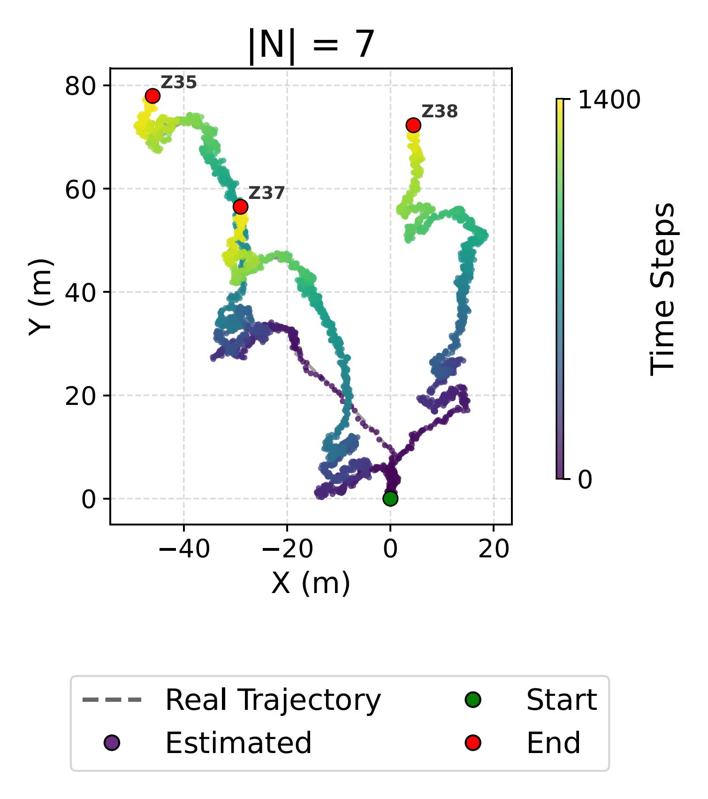
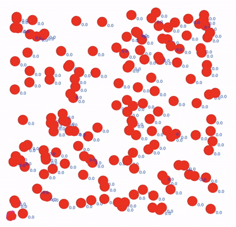
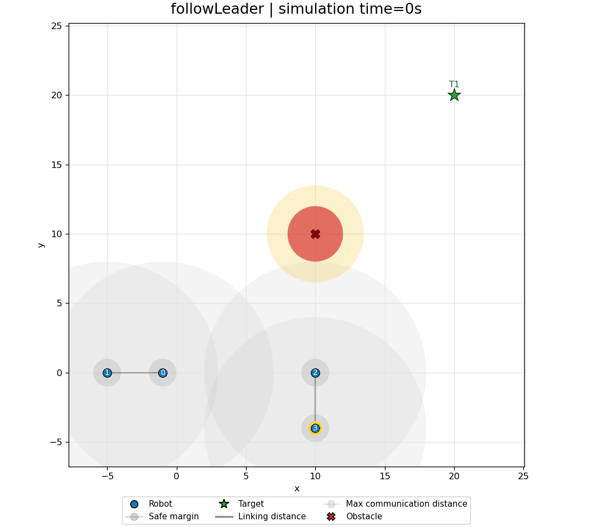

Advances in Collective Robotics Through Macro-Programming
Challenge

Context
Collective Adaptive Systems are large-scale group of heterogeneous devices and services that must stay adaptive while devices do things and the environment changes at runtime
Macro-programming allows for programming at the collective level, abstracting away the individual node behavior specification.
Aggregate Computing is built on that abstraction, it emphasizes the use of local interactions and self-organization to achieve global objectives.
Open gap
Towards Collective Operating Systems
Aggregate Computing systems often remain isolated aggregate programs:
- No support for preemption;
- User permissions not defined.
Towards Collective Operating Systems
Contributions
Consensus: Self-stabilizing gossip

Resource Management: FieldVMC

Monitoring: Field-Based Distributed Particle Filtering



Adaptation: Runtime replanning

Safety: Control Barrier Functions
